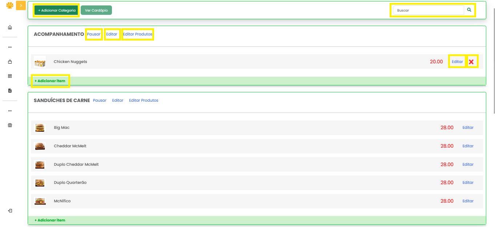
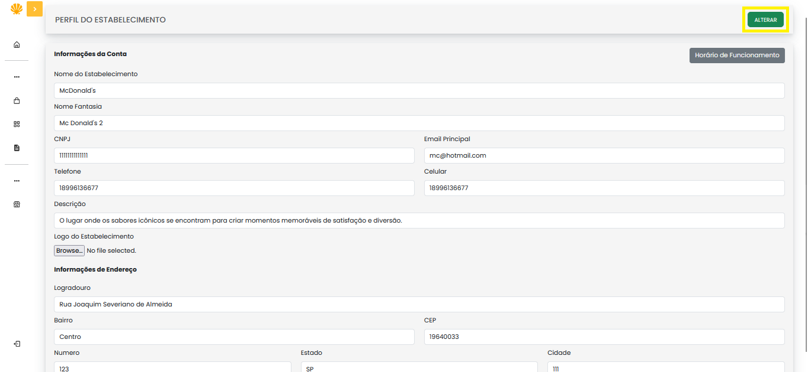
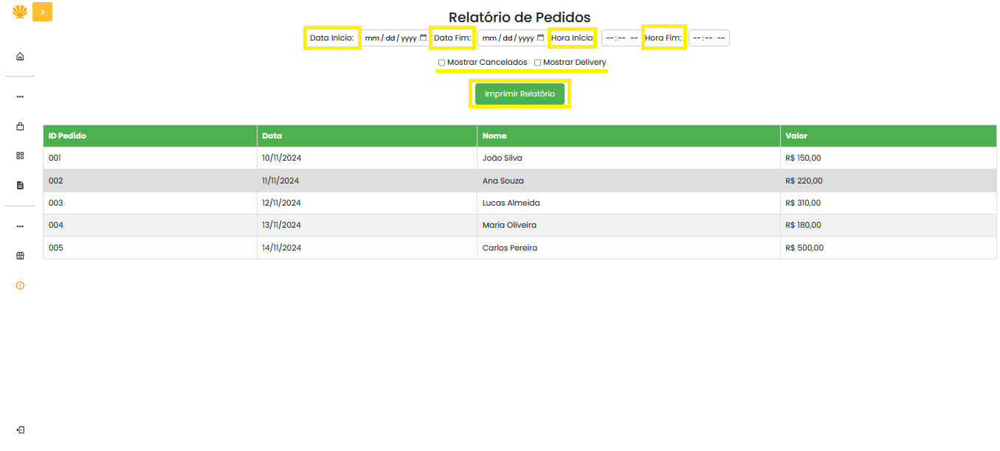

O ícone destacado em amarelo, localizado no canto superior esquerdo, permite exibir ou ocultar o menu lateral, proporcionando maior controle sobre a navegação.
Nos cartões das filas de produtos do estabelecimento, é possível visualizar o pedido realizado pelo cliente, bem como suas respectivas informações. Além disso, o sistema permite que o estabelecimento cancele pedidos específicos ou altere seu status, possibilitando o avanço das etapas do processo até que o pedido esteja disponível para retirada ou entrega ao cliente.
No canto inferior esquerdo, o ícone destacado em amarelo oferece a funcionalidade de logout, permitindo que o estabelecimento encerre a sessão de forma segura.
Nesta seção, é possível realizar o cadastro de categorias e produtos específicos de cada estabelecimento, conforme sua necessidade.
Na opção destacada no canto superior esquerdo, encontra-se o botão **Adicionar Categoria**. Ao clicar nesse botão, será exibida uma janela modal contendo o formulário necessário para o preenchimento dos dados e a criação de uma nova categoria.
Na barra de busca, localizada no canto superior direito, é possível pesquisar produtos cadastrados no estabelecimento. Basta inserir o nome do produto desejado e clicar no ícone de lupa para realizar a busca.
O conteúdo principal da tela apresenta o agrupamento das categorias existentes e seus respectivos produtos. Após a criação de uma categoria, torna-se habilitada a opção de adicionar itens a ela, conforme destacado em amarelo. Ao selecionar essa funcionalidade, uma janela modal será exibida para preenchimento das informações referentes ao novo produto.
Após o cadastro de um produto, é possível removê-lo utilizando a opção **Editar Produtos**. Ao clicar nesta opção, o sistema exibe um ícone "X" em vermelho, conforme ilustrado na imagem, que permite a exclusão do item. Também é possível atualizar as informações do produto através da funcionalidade **Editar**.
As categorias, por sua vez, podem ser editadas ou, caso desejado, pausadas. Categorias pausadas não estarão mais visíveis para os usuários.
Nesta página, é possível editar os dados relacionados ao estabelecimento, incluindo as informações que devem ser exibidas aos usuários, como logotipo, descrição do estabelecimento, nome e endereços.
Após realizar o preenchimento ou alteração de qualquer campo no formulário, é necessário clicar no botão **Alterar**, localizado no canto superior direito e destacado em amarelo, para que as modificações sejam aplicadas corretamente.
Para a geração dos relatórios solicitados pelo estabelecimento, é necessário preencher os filtros destacados na interface. Após preencher os campos requeridos, basta clicar no botão **Imprimir Relatório** para finalizar o processo.